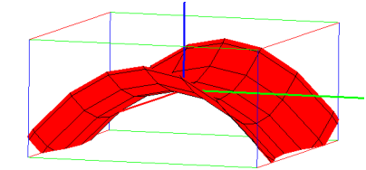

18.2.7 Power regression
The power_regression
command finds the graph y=bxm which best fits a set of data points.
-
power_regression takes two arguments:
-
xcoords, a list of x-coordinates.
- ycoords, a list of y-coordinates.
You can combine two arguments into a matrix with two columns (each
list becomes a column of the matrix).
- power_regression(xcoords,ycoords)
returns a sequence m,b of the numbers in the best fit power
equation y=b xm.
Example
| power_regression([[1,1],[2,4],[3,9],[4,16]]) |
or:
| power_regression([1,2,3,4],[1,4,9,16]) |
so the best fit (in this case, exact fit) power curve will be y=1.0 x2.
The power_regression_plot
command draws the best fit power function.
-
power_regression_plot takes two arguments:
-
xcoords, a list of x-coordinates.
- ycoords, a list of y-coordinates.
You can combine two arguments into a matrix with two columns (each
list becomes a column of the matrix).
- power_regression_plot(xcoords,ycoords)
draws the best fit power function, and puts the equation and R2
value above the graph.
Example
| power_regression_plot([1,2,3,4],[1,4,9,16]) |

Note that in this case the R2 value is 1, indicating that
the data points fall directly on the curve.